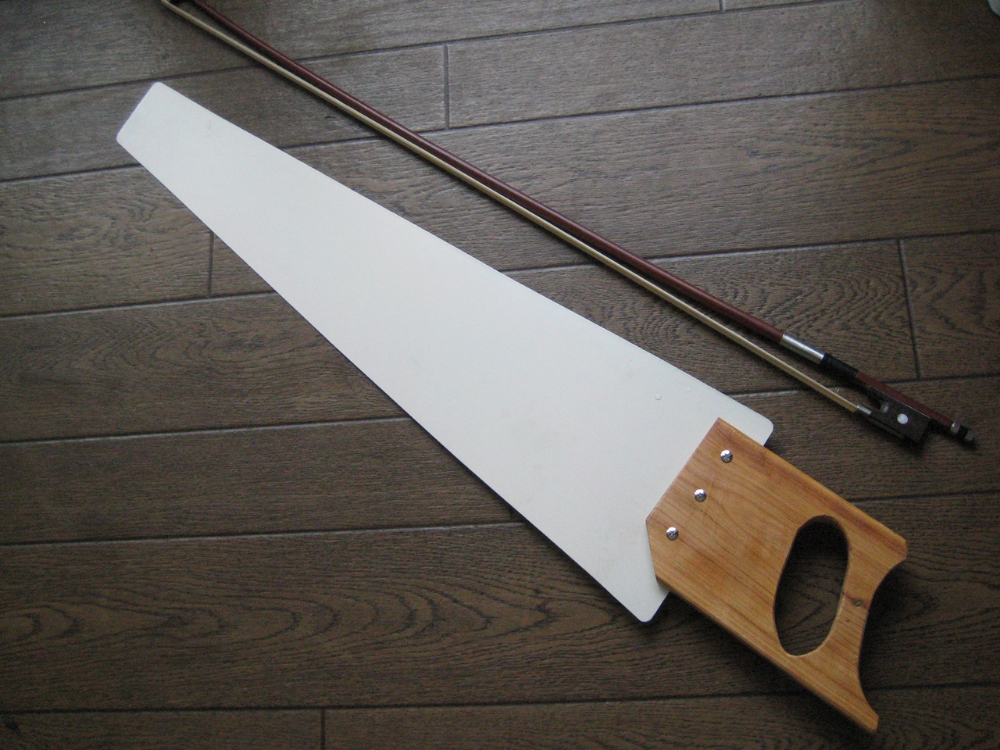

Музыкальная пила — пила, используемая в качестве музыкального инструмента. По штриху относится к глиссандо; звук, издаваемый ею, напоминает звуки терменвокса.
Считается, что впервые пилу как музыкальный инструмент стали использовать в XIX веке в Аппалачах, США. Уже к 1900-м годам в этой стране было больше десяти компаний, специализировавшихся на производстве музыкальных пил; производство инструмента несколько снизилось в первой половине XX века, но затем вновь пошло на подъём. Сейчас музыкальные пилы производятся также и в других странах — в частности, в Англии и Швеции.
В 1975 году композитор Джек Ницше использовал звуковой эффект музыкальной пилы в фильме «Пролетая над гнездом кукушки», что привлекло существенное внимание критиков.
Российский музыкант, автор-исполнитель Павел Кашин использовал пилу в записи нескольких альбомов.
В Нью-Йорке регулярно проводится международный фестиваль музыкальной пилы (англ. New York City Musical Saw Festival). В 2009 г. в ходе фестиваля был зарегистрирован рекорд для Международной книги рекордов Гиннесса: 53 музыканта в ансамбле исполнили на пилах Ave Maria Шуберта.
